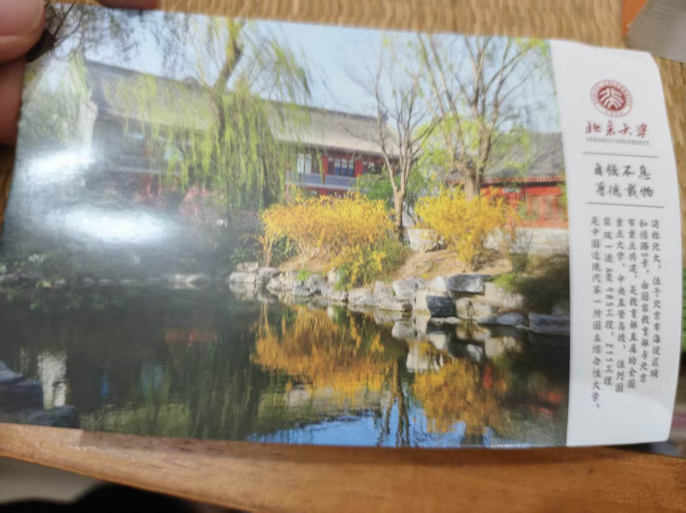
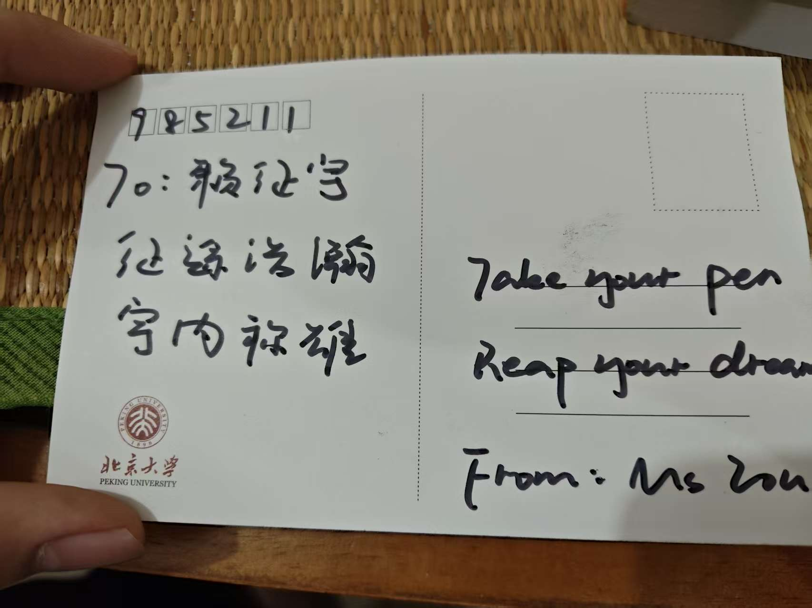
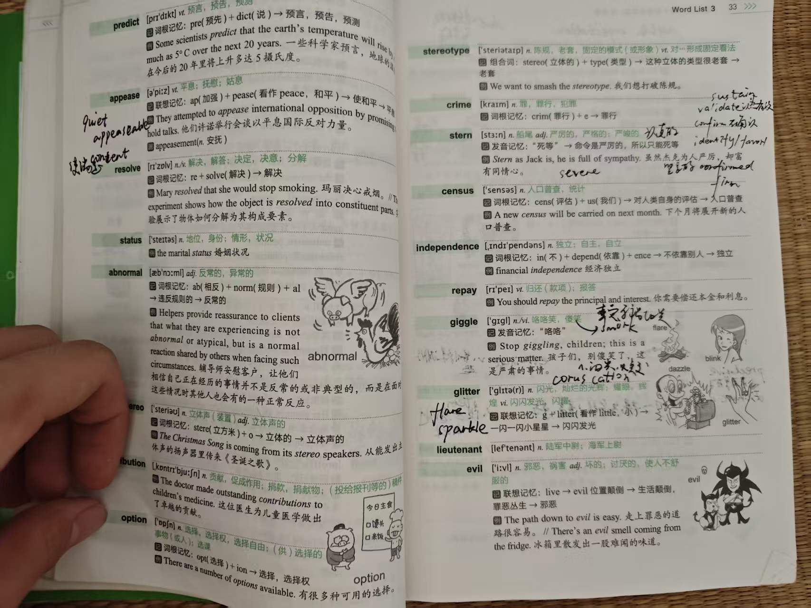

AI 创作音乐作品 01生成式 AI 辅助音乐创作实验
AI × Music Creation
AI 创作
音乐作品
保留你原来加入网站的三个 MP4 视频。现在它们不再只是“附加模块”，而是创作页的核心作品。
Language & Memory
英语学习留下的
两张明信片。
英语老师送的两张明信片，和我背单词、练写作时留下的一页页笔记，都是这门语言陪我成长的证据。


Vocabulary & Writing Notes
翻过的词汇书，写满的笔记。
从六级、考研词汇书到图表作文的手写整理，这些照片记录了我每天背单词、记搭配、练写作的真实过程。





A sentence I keep
“Take your pen, reap your dream.”
来自英语老师的期许。英语不仅是考试能力，也是一扇进入全球技术资料、论文、课程与创作者世界的窗口。